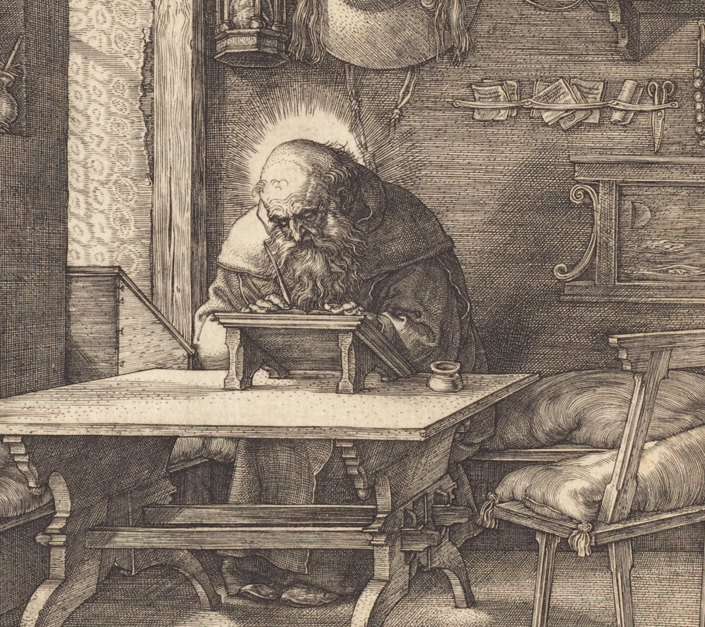
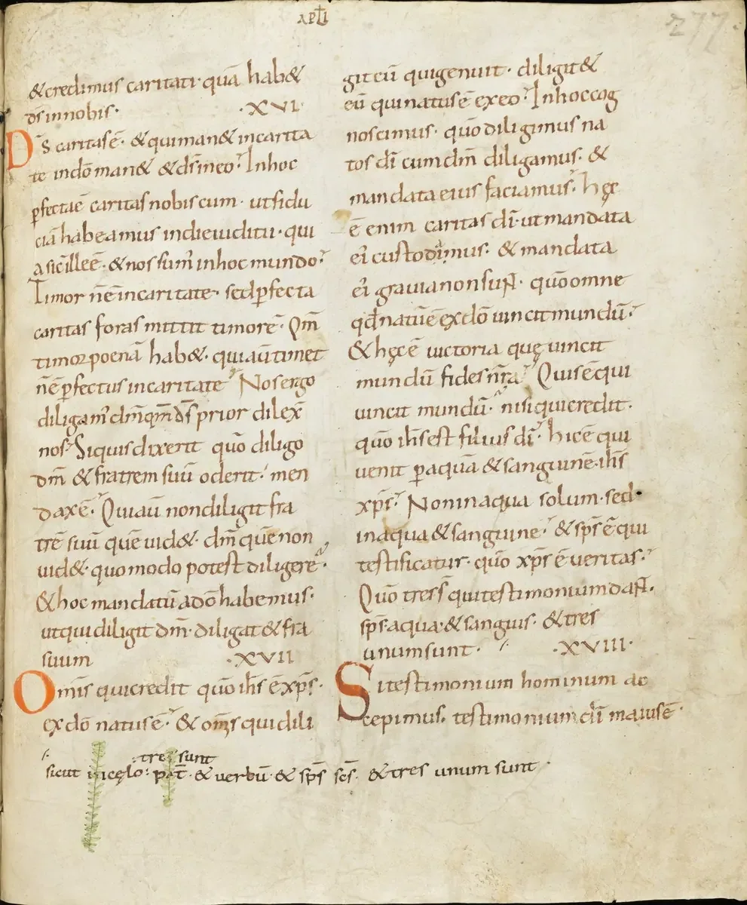
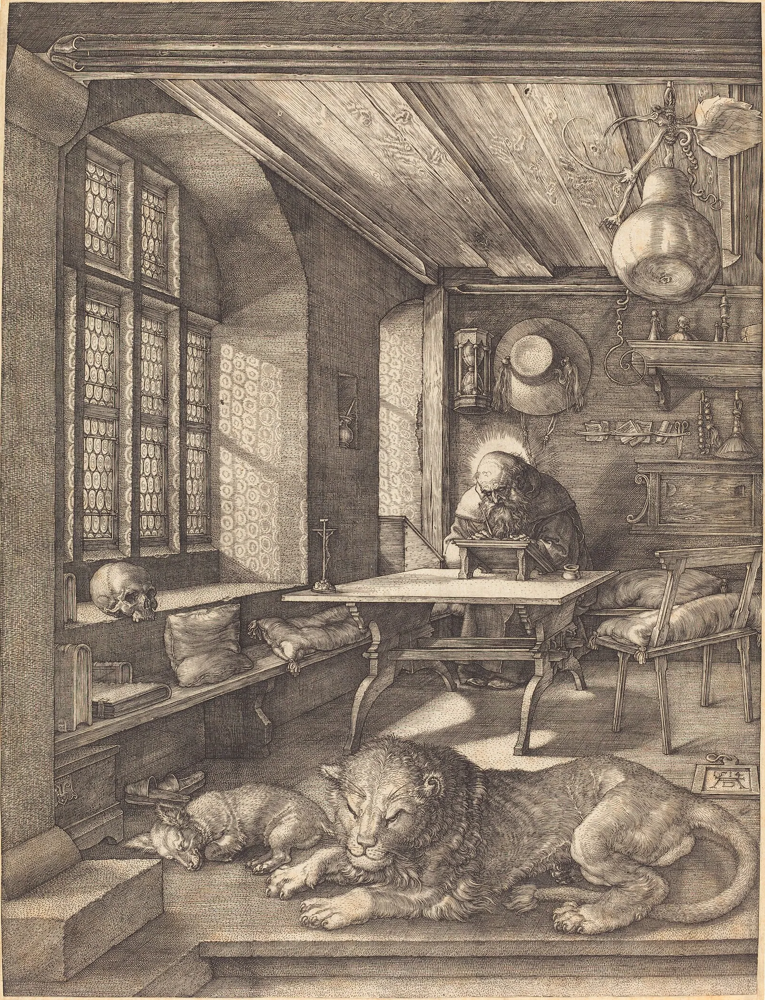
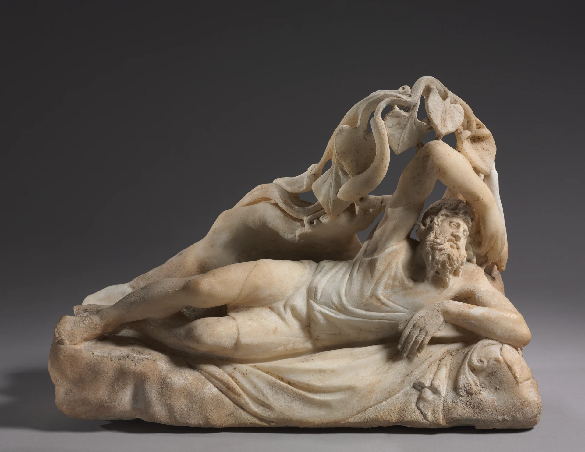
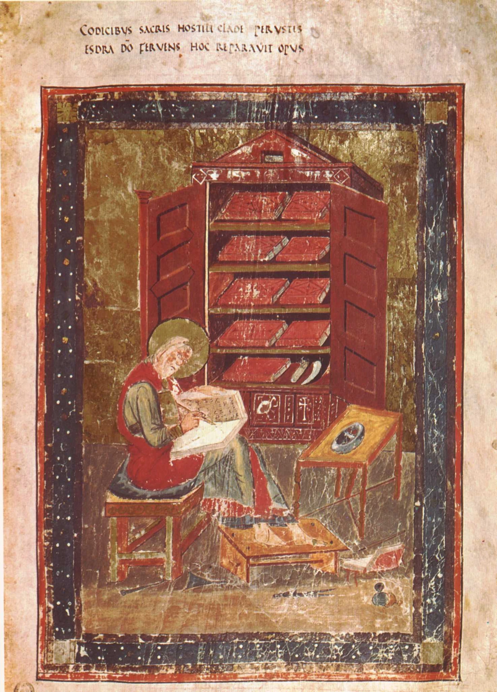
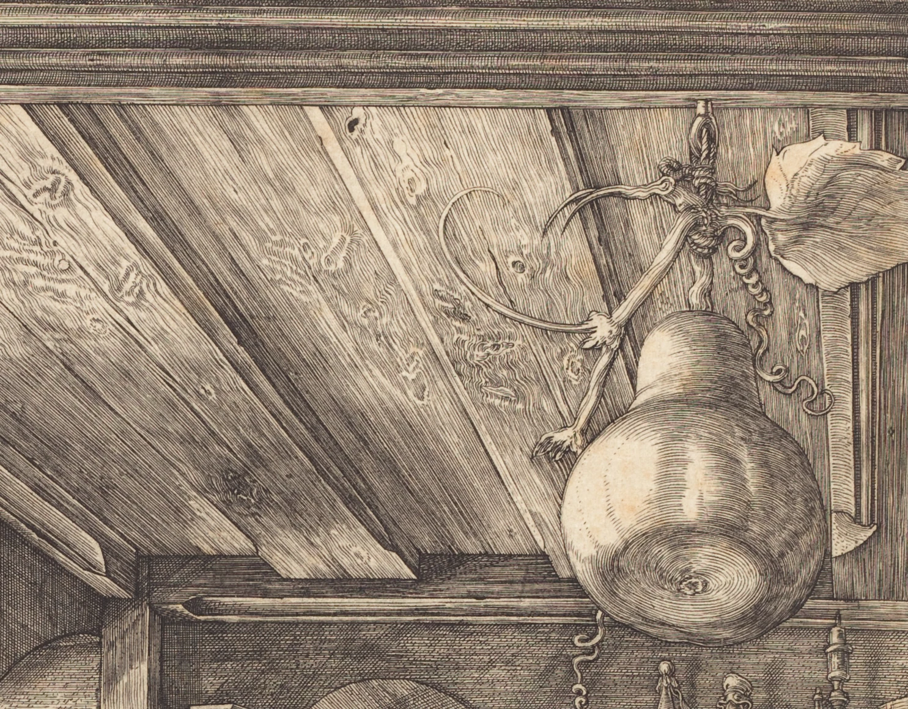

아직 펼치지 않은 카드가장 오래된 성경을 찾아서 · 6히에로니무스와 불가타 성경천 년 넘게 서방 교회가 읽은 라틴어 성경은 베들레헴에서 완성되었어요. 번역자는 구약을 무엇에서 옮겼을까요?사자 발에서 가시를 빼 줬다는 학자 이야기가 있대!
382년 ~ 716년로마 · 베들레헴 · 북아프리카 오에아 · 잉글랜드
히에로니무스와 불가타 성경
천 년 넘게 서방(서유럽) 교회가 읽은 라틴어 성경에도, 처음엔 낯선 새 번역이던 때가 있었어요. 밤에 배운 히브리어, 1,100년 뒤 화가가 상상한 서재, 낱말 하나에 술렁인 교회를 차례로 따라가 보세요.
옛날에 성경을 새로 옮겼더니, 낱말 하나 때문에 사람들이 소리쳤대. 무슨 낱말이었을까?
검수 전 시안이에요(기준서 1판). 찾아보기의 서재는 1514년 뒤러가 상상해 새긴 판화로, 4세기 베들레헴의 방을 본 그대로가 아니에요. 그림 속 물건의 뜻은 박물관마다 설명이 달라 ‘기록마다 다른 점’에 적었어요. 상상은 ‘눈 감고 상상해 보기’에만 썼어요.
시안 확인용카드 단계 미리 보기
1
로마의 부탁
앞면의 쪽은 스위스 장크트갈렌 수도원 도서관에 있는 9세기 라틴어 성경이에요. 이 라틴어 번역의 첫걸음은 382년 로마에서 시작됐어요.
그해 교황 다마소 1세는 히에로니무스를 비서로 두고, 오래된 라틴어 복음서(예수의 생애를 담은 네 책)를 고쳐 달라고 부탁했어요. 그 무렵 라틴어 성경은 베낀 책마다 글이 달랐어요. 히에로니무스는 ‘사본의 수만큼이나 본문이 여러 가지’라고 적었어요.
383년 그는 옛 그리스어 사본(복음서가 처음 쓰인 말이에요)과 견주어 뜻이 달라지는 곳만 고친 복음서를 교황에게 보냈어요. 머리말에는 이 일이 ‘사랑의 수고(좋아서 하는 고생)이지만 위험하고 주제넘은 일’이라고 적었어요.
“배운 사람이든 못 배운 사람이든, 이 책을 손에 들고 늘 읽던 것과 다른 것을 보면, 곧바로 나를 위조꾼이요 불경한 자라고 부르지 않을 사람이 있겠습니까?”
히에로니무스, 복음서 머리말(383년, 교황 다마소에게) · 19세기 영어 번역 총서(NPNF)를 이 안내서가 우리말로 옮김
그 걱정은 20년 뒤, 북아프리카의 한 교회에서 그대로 일어나요(셋째 장면).
로마의 교황님이 “성경을 바로잡아 주세요” 하고 부탁했대.
물어보기같은 이야기인데 책마다 글이 다르면 어떻게 될까?
2
밤의 히브리어
384년 교황이 세상을 떠나자 히에로니무스는 베들레헴으로 가서, 구약을 히브리어 원문에서 옮겼어요(앞면 카드에 나온 이야기예요).
예루살렘과 베들레헴에서 그는 히브리어를 더 배웠어요. 유대인 선생 바라니나(Baraninas)는 다른 유대인들의 눈을 두려워해 밤에만 가르쳤어요. 히에로니무스는 400년의 편지에서, 그를 모셔 오느라 애도 쓰고 돈도 많이 들었다며 그를 ‘또 한 사람의 니고데모’라고 불렀어요. 니고데모는 밤에 예수를 찾아온 사람이에요(요한복음 3장 2절).
1,100년쯤 뒤인 1514년, 독일 화가 알브레히트 뒤러(Albrecht Dürer)는 그의 서재를 상상해 동판(구리판)에 새겼어요. 번호가 붙은 곳을 하나씩 눌러 보세요.
1514년 뒤러가 상상한 서재예요. 번호를 하나씩 눌러 보고, ‘가까이 보기’로 크게 들여다보세요.

알브레히트 뒤러, 「서재의 성 히에로니무스」(1514년, 동판화) · 퍼블릭 도메인 · 미국 국립미술관 · 위키미디어 공용
그림 위의 숫자나 아래 번호를 눌러 보세요.
일곱 곳을 다 찾았어요. 고요한 서재지만, 천장의 박 하나에 한 낱말을 둘러싼 다툼이 숨어 있어요.
뒤러의 방은 4세기 베들레헴의 방을 본 그대로가 아니에요. 자기 시대의 서재처럼 그린 상상이에요.
밤에 몰래 찾아온 선생님한테 옛날 말을 배웠대.
물어보기선생님은 왜 밤에만 찾아왔을까?
3
오에아의 소동
403년, 북아프리카의 도시 오에아(Oea, 지금의 리비아 트리폴리)에서 주교(그 도시 교회를 이끄는 성직자)가 히에로니무스의 새 번역으로 요나서를 읽게 했어요. 그런데 한 낱말이 여러 세대 동안 교회에서 소리 내어 읽고 불러 온 말과 달랐어요.
회중(예배에 모인 사람들), 특히 그리스 사람들이 소리를 높여 번역이 틀렸다고 했어요. 주교는 그 도시의 유대인들에게 물었고, 그들은 히브리어도 그리스어 성경과, 거기서 옮긴 라틴어 성경과 같다고 대답했어요.

“그 사람은 회중을 잃지 않으려고, 마치 잘못 옮긴 것처럼 그 대목을 고쳐 읽을 수밖에 없었습니다.”
아우구스티누스가 히에로니무스에게 보낸 편지 71(403년) · 19세기 영어 번역 총서(NPNF)를 이 안내서가 우리말로 옮김
문제의 낱말은 요나의 머리 위로 자라 그늘을 드리운 식물이었어요(요나 4장 6절). 그리스어 칠십인역(구약을 그리스어로 옮긴 성경)과 거기서 옮긴 옛 라틴어 성경은 ‘박’이라 했고, 히에로니무스는 ‘담쟁이’라고 옮겼어요.
이듬해 답장에서 그는 히브리어 ‘키카욘’을, 잎이 넓고 빨리 자라 막대에 기대지 않고 제 줄기로 서는 떨기나무(키 작은 나무)라고 설명했어요. 히브리어 소리 그대로 쓰면 아무도 못 알아듣고, ‘박’이라 하면 히브리어에 없는 말을 하게 된대요. 그래서 그리스어로 옮긴 아퀼라(Aquila) 같은 다른 번역자들처럼 ‘담쟁이’를 골랐다고 했어요.
사진은 280~290년 무렵 아나톨리아에서 대리석으로 새긴 ‘박 넝쿨 아래의 요나’예요. 히에로니무스보다 100년쯤 앞선 조각이에요.
403년 오에아의 교회에 앉아 있어요. 요나서를 읽는데, 늘 듣던 ‘박’ 대신 낯선 ‘담쟁이’가 들려요. 어떻게 할까요?
새 성경을 읽었더니 사람들이 “그 말 틀렸어!” 하고 소리쳤대.
물어보기늘 부르던 이름이 갑자기 바뀌면 어떤 마음이 들까?
4
로마로 가는 큰 책
300년쯤 뒤인 700년 무렵, 잉글랜드 북동쪽 웨어머스·재로(Wearmouth–Jarrow) 수도원의 수도사들이 히에로니무스의 번역으로 큰 성경 세 권을 만들었어요. 그 가운데 ‘아미아티누스 사본’은 지금 남은, 한 권에 다 담긴 가장 오래된 라틴어 성경이에요. 양피지(짐승 가죽을 얇게 펴 말린 것)가 1,000장이 넘고 무게는 34킬로그램이 넘어요.
716년 6월 4일, 늙은 수도원장 체올프리스(Ceolfrith)는 이 책을 로마의 교황에게 선물하려고 길을 떠났어요. 웨어강 가에 선 수도사들은 떠나는 배를 보며 울었다고 해요. 그는 가는 길에 프랑스 랑그르에서 9월 29일 세상을 떠났어요.

“거룩한 책들이 적이 일으킨 난리에 불타 버렸을 때, 주님께 뜨거웠던(열심이던) 에스라가 이 일을 다시 이루었다.”
아미아티누스 사본 앞쪽 다섯째 장, 에스라 그림 위의 라틴어 두 줄 · 영어 번역(F. Watson, 2022)을 이 안내서가 우리말로 옮김
사진은 이 책 맨 앞쪽의 그림이에요. 옛 유대 전승에서 에스라는 불타 버린 거룩한 책들을 다시 써낸 학자예요. 뒤로는 문이 열린 책장에 성경 아홉 권이 누워 있어요.
아주아주 큰 성경을 교황님께 선물하러 먼 길을 떠났대.
물어보기그림 속 할아버지는 무엇을 쓰고 있을까?
눈 감고 상상해 보기
밤이에요. 베들레헴의 작은 방에 등잔불 하나가 흔들려요. 누군가 조심스레 문을 두드리고, 히브리어 선생이 들어와 앉아요. 선생이 낮은 목소리로 한 낱말을 읽어요. “키카욘.” 히에로니무스는 펜을 든 채 오래 망설여요.
눈을 감아 봐. 깜깜한 밤, 작은 등잔불 아래에서 두 사람이 소곤소곤 옛날 말을 읽고 있어.
나의 자리
오에아 사람들에게 옛 말씀은 귀에 익은 ‘박’이었고, 히에로니무스에게는 더 오래된 히브리어 원문이었어요. 나에게 ‘옛 그대로’는 어느 쪽인가요?
늘 듣던 말과 맨 처음 쓰인 말이 다르면, 너는 어느 쪽을 고를래?
마음에 닿는 한 줄을 고르거나 직접 써 보세요. 한 줄을 남기면 이 자리의 도장이 찍혀요. 이 기기에만 저장돼요.
더 깊이
이야기를 보다 궁금해질 만한 것들이에요. 답을 읽거나 짧은 영화로 보세요.

그래서 누가 맞았어요? 키카욘은 무슨 식물이에요?
‘위조꾼’ 소리를 듣던 번역이 어떻게 ‘불가타’가 됐어요?
뒷이야기
아직 펼치지 않은 이야기예요. 누르면 이야기가 펼쳐지고 색이 돌아와요. 더 알고 싶으면 근거를 따라가 보세요.
다 펼치면, 다음에 오실 때 새 이야기가 찾아와요.
오늘의 뒷이야기는 여기까지예요. 다음에 오시면 새 이야기가 기다리고 있어요.
펼친 뒷이야기 · 누르면 다시 볼 수 있어요
더 찾아보기
기록마다 다른 점
천장의 박은 무슨 뜻일까 영국 왕실 소장품 해설과 미국 오벌린 대학 미술관은 요나서의 낱말 다툼을 가리킨다고 보고, 미국 브루클린 박물관은 부활의 약속을 가리킨다고 설명해요.
벽의 모자 스코틀랜드 국립미술관 자료는 추기경 모자, 브루클린 박물관은 주교의 모자라고 불러요. 사자도 브루클린 박물관과 오벌린 대학 미술관은 졸고 있다고, 스코틀랜드 국립미술관 자료는 눈을 뜨고 지켜본다고 해요.
오에아의 유대인들은 왜 그렇게 답했을까 아우구스티누스는 몰라서였는지 미워해서였는지 모르겠다고 적었어요. 히에로니무스는 그들이 히브리어를 몰랐거나, ‘박을 심는 사람들’을 놀리려 했다고 답했어요.
책은 교황에게 닿았을까 영국 도서관은 체올프리스의 옛 전기를 따라, 남은 수도사들이 길을 이어 가 교황에게 선물을 전했다고 설명해요. 교황에게 닿지 못했다고 쓴 글도 있어요. 그 뒤 기록이 끊겼다가 9세기에 몬테 아미아타의 수도원에서 다시 나타나요.
양피지는 몇 장일까 가톨릭 백과사전(1908년)은 1,029장, 위키백과는 1,040장이라고 적어요.
‘불가타’라는 이름은 언제 붙었을까 새 가톨릭 백과사전은 히에로니무스의 번역이 옛 번역을 밀어낸 중세 초부터라고 하고, 프랑스 백과사전 『위니베르살리스』는 13세기부터라고 해요.
남은 두 권 영국 도서관의 클레어 브레이는 한 권은 사라지고 한 권은 몇 장 남았다고 말해요. 2013년 영국 도서관 블로그는 남은 낱장들이 같은 성경인지 그 짝인지를 열어 둬요.
함께 읽는 말씀
말씀은 뜻만 옮기고, 본문은 대한성서공회 개역개정으로 이어 드려요.
요나 4장 6~10절 하나님이 요나에게 그늘을 주려고 하룻밤에 자라게 하신 식물 이야기예요. 개역개정은 ‘박넝쿨’이라고 옮겼어요.
요한복음 3장 1~2절 밤에 예수를 찾아온 니고데모 이야기예요. 히에로니무스는 밤에 히브리어를 가르쳐 준 선생을 ‘또 한 사람의 니고데모’라고 불렀어요.
마태복음 12장 40절 예수가, 요나가 큰 물고기 배 속에 있던 사흘을 자신이 땅속에 있을 사흘에 빗댄 구절이에요.
직접 가 보기 · 집에서 보기
확인한 날 · 2026년 11월 18일 · 바뀌기 쉬운 정보라 정기적으로 다시 확인해요
사진은 베들레헴 성 카타리나 성당 아래 동굴의 성 히에로니무스 경당이에요(앞면 ‘해 보기’의 그 동굴). 입구 돌판에는 라틴어로 ‘한때 사제이자 교회 학자인 성 히에로니무스의 자리’라고 새겨져 있어요.
베들레헴은 팔레스타인 서안 지구에 있어요. 상황이 자주 바뀌니 가시기 전에 외교부 해외안전여행의 여행경보를 꼭 확인해 주세요.
집에서는 앞면의 장크트갈렌 성경과 뒤러의 판화를 누리집에서 크게 볼 수 있어요.
서재의 일곱 곳 금박
뒤러가 새긴 서재에서 일곱 곳을 모두 찾아 읽으면 카드에 금박이 입혀져요.
찾아보기의 일곱 곳을 모두 눌러 읽기
오에아의 교회에서 채색
둘 가운데 하나만 해도 카드가 채색돼요.
오에아의 교회에서 낯선 낱말을 들은 사람이 되어 고르기
아이와 함께 ‘영화처럼 보기’를 끝까지 보기
근거 보기 (38)
- 가톨릭 백과사전(1910): St. Jerome — 391~392년 무렵까지 칠십인역을 영감받은 번역으로 여기다 그 뒤 히브리어 원문만 그렇다고 봄, 390~405년 히브리어에서 구약, 다마소의 죽음(384년 12월 11일)과 적, 385년 8월 로마를 떠남, 386년 베들레헴, 파울라와 에우스토키움, 384년 · 386~391년의 시편 개정(갈리아 시편)
- 히에로니무스, 편지 45(아셀라에게, 385년 8월 오스티아의 배 위에서) — ‘슬픔과 눈물에 잠겨 서둘러 쓴다’
- 히에로니무스, 「루피누스를 반박함」 1권 13절 — 루피누스가 ‘바라바라는 유대인을 선생으로’라며 비웃음, 바라니나와 글자가 비슷함, ‘스승’이라 부른 적은 없음, 이 유대인에게 배움
- 새 가톨릭 백과사전: Vulgate(L. F. Hartman · B. F. Peebles · M. Stevenson) — ‘널리 퍼진 판’, 교부들(특히 히에로니무스)이 칠십인역과 옛 라틴어 성경을 부르던 이름, 새 번역이 옛 번역을 밀어낸 뒤 이름을 물려받음, 아우구스티누스는 처음 걱정하다 차츰 바뀜, 6~8세기에 자리 잡음, 갈리아 시편의 우세, 아미아티누스의 히브리어 시편, 1546년 트리엔트
- Encyclopædia Universalis: Vulgate de saint Jérôme(J.-U. Comby) — 13세기부터 ‘vulgata versio’라 부름, 1546년 트리엔트
- Encyclopaedia Judaica: Castor-Oil Plant(J. Feliks) — 키카욘은 아주까리(문맥 · 말의 뿌리 · 탈무드와 번역자들), 빨리 자라고 그늘진 넓은 잎, 박이라는 풀이는 칠십인역에서 처음
- British Library, Medieval manuscripts blog: The Ceolfrith Bible(C. Westwell, 2013년 5월 10일) — 세 권(재로 · 웨어머스 · 교황), 16세기 윌러비 집안 땅문서의 표지, 1937년, 열 장과 한 장의 조각, 아미아티누스 48센티미터 넘음 · 35킬로그램
- British Library 기록: Add MS 37777(‘그린웰 낱장’) — 1780년 옛 장부의 표지, 1882년 뉴캐슬의 가게, 더럼 대성당의 사서 그린웰, 1909년 기증
- Smarthistory: Codex Amiatinus(영국 도서관 클레어 브레이 · 베스 해리스 대담, 2019) — 500마리가 넘는 짐승의 가죽, 75파운드, 책등 거의 1피트, 한 권은 사라지고 한 권은 몇 장, 바치는 글이 롬바르드족의 페트루스로 바뀜, 이탈리아 책에서 노섬브리아 책으로
- 야코부스 데 보라기네, 『황금 전설』 146장 히에로니무스(캑스턴 영어판 1483년 · R. Stracke 엮음 읽기 판, Internet Medieval Sourcebook 바탕) — 스물아홉 살에 추기경 사제(전설), 사자와 당나귀와 낙타 상인(전설)
- 가톨릭 백과사전(1908): Cardinal — 붉은 모자는 1245년 리옹 공의회에서 인노첸시오 4세가 추기경들에게 줌
- 가톨릭 백과사전(1908): Cassiodorus — 로마의 작가 · 정치가 · 수도사, 490년 무렵~583년 무렵, 비바리움 수도원
- 가톨릭 백과사전(1907): St. Augustine of Hippo — 히포의 주교(396~430년)
- Cleveland Museum of Art 소장품 기록(열린 자료): 1965.239 — 넝쿨 그늘에서 쉬는 요나, 수염과 넓은 잎, 같은 무리(삼켜지는 요나 · 뱉어지는 요나 · 기도하는 요나 · 착한 목자), 항아리 하나에서 나왔다는 확인되지 않은 이야기
- Christian Media Center(성지 프란치스코회): Saint Jerome. The first translation of the Bible from the original texts(2020년 9월 29일) — 성 카타리나 성당 아래 동굴들, 무덤으로 알려진 동굴, 파울라와 에우스토키움의 무덤, 십자군이 유해를 로마로
- 대한성서공회 개역개정: 요한복음 18장 40절 — 바라바는 강도
- British Library 소장 목록: Cotton MS Nero D IV(린디스판 복음서) — 700년 무렵 잉글랜드, 3r~5v쪽 히에로니무스가 교황 다마소에게 쓴 편지(Novum opus)
- H. H. Howorth, The Influence of St Jerome on the Canon of the Western Church I(Journal of Theological Studies 10, 1909) — 복음서 새 판을 드리며 쓴 머리말의 첫마디 ‘Novum opus facere me cogis ex veteri’
- 히에로니무스, 복음서 머리말(교황 다마소에게, 383년) · NPNF 2-6 — 옛 라틴어판을 고쳐 달라는 부탁, ‘사본의 수만큼이나 본문이 여러 가지’, 옛 그리스어 사본과 견주어 뜻이 달라지는 곳만 고침, ‘사랑의 수고이지만 위험하고 주제넘은 일’, 위조꾼이라 부를 것이라는 걱정
- 히에로니무스, 편지 84(팜마키우스와 오케아누스에게, 400년) 3절 — 예루살렘·베들레헴에서 바라니나에게 밤에 배움, 유대인을 두려워한 ‘또 한 사람의 니고데모’
- 아우구스티누스, 편지 71(히에로니무스에게, 403년) — 오에아의 주교, 요나서의 한 낱말, 그리스 사람들이 앞장선 소동, 유대인들의 대답, 회중을 잃지 않으려고 고쳐 읽음 · 재벌: 그리스어 원문을 내밀면 라틴어 번역의 다른 곳이 곧 드러남, 그리스어는 널리 아는 말, 히브리어 문서는 구하기 어려움(4절), 앞서 보낸 편지와 프로푸투루스(2절)
- 히에로니무스, 편지 75(아우구스티누스에게, 404년) 22절 — 히브리어 키카욘, 잎이 넓고 빨리 자라 제 줄기로 서는 떨기나무, 칠십인역 ‘박’과 아퀼라 등의 ‘담쟁이’, 다른 번역자들과 다르지 않으려고 ‘담쟁이’를 씀, 오에아 유대인들에 대한 대답
- Royal Collection Trust: Albrecht Dürer, St Jerome in his Study(1514) — 박(요나서 낱말로 아우구스티누스와 갈림), 교황의 비서, 사자와 개, 모래시계, 해골과 십자가
- National Galleries Scotland: St Jerome in his Study(해설 T. Gaba, 2016) — 가시 전설의 사자, 눈을 뜨고 지키는 사자, 잠든 개, 추기경 모자, 천장의 박, 머리글자 패, 히브리어에서 옮긴 불가타
- Victoria and Albert Museum: St Jerome in his Study — 르네상스 화가들이 그린 그 시대의 서재, 유리창으로 드는 햇빛, 박·모래시계·해골
- Allen Memorial Art Museum(오벌린 대학): Dürer, St. Jerome in His Study — 역사와 맞지 않는 모자, ‘1514 / AD’ 패, 키카욘·담쟁이·박의 다툼, 졸고 있는 사자, 바사리가 칭찬한 빛
- Brooklyn Museum: Saint Jerome in His Study — 부활의 약속을 가리키는 박, 졸고 있는 사자, 주교의 모자
- National Gallery of Art: Saint Jerome in His Study, 1514, 동판화(로젠월드 컬렉션) — 찾아보기 그림의 원본 기록
- Cleveland Museum of Art: Jonah Under the Gourd Vine(1965.239) — 280~290년, 아나톨리아, 대리석, 퍼블릭 도메인
- F. Watson, Self-Portrait of a Bible: The Ezra Image of Codex Amiatinus(Religions 13, 2022, CC BY) — 5쪽 앞면 에스라 그림, 라틴어 두 줄과 번역, 에스드라 2서(제4에스라) 14장 전승, 책장의 아홉 권
- British Library, Medieval manuscripts blog: The first voyage of Codex Amiatinus(2018년 6월 4일) — 716년 6월 4일 웨어강 가의 수도사들, 성 베드로의 성지에 줄 선물, 랑그르 9월 29일, 수도사들이 교황에게 선물을 전함, 히에로니무스의 불가타
- Aleteia(2018년 10월 22일): Enormous Bible from the 8th century returns to England after 1,302 years — ‘교황에게 닿지 못했다’는 설명, 9세기 몬테 아미아타에서 다시 나타남
- Catholic Encyclopedia(1908): Codex Amiatinus — 몬테 아미아타 산 살바토레 수도원에 9세기부터 1786년까지, 수도원이 문을 닫으며 피렌체로, 1,029장
- Wikipedia: Codex Amiatinus — 길잡이(700년 무렵 웨어머스·재로, 남은 가장 오래된 온전한 한 권짜리 라틴어 성경, 1,040장, 34kg 넘음, 교황 그레고리오 2세에게 줄 선물, 1786년 라우렌치아나 도서관)
- Wikipedia: Kikayon — 길잡이(박·아주까리 가설, 오늘날 히브리어의 아주까리, 히에로니무스는 둘 다 아니라고 봄)
- Wikipedia: Pope Damasus I · Jerome · Oea — 길잡이(다마소 366~384년, 히에로니무스 420년 베들레헴에서 세상을 떠남, 오에아는 지금의 트리폴리)
- 대한성서공회 개역개정: 요나 4장 — ‘박넝쿨’
- e-codices: St. Gallen, Stiftsbibliothek, Cod. Sang. 63 — 앞면 그림의 사본(9세기 말~10세기 초, 장크트갈렌)
그림·사진·소리 출처
- 사진: Fallaner · CC BY-SA 4.0 · 위키미디어 공용
- 퍼블릭 도메인 · 미국 국립미술관 · 위키미디어 공용
- 퍼블릭 도메인 · 클리블랜드 미술관 · 위키미디어 공용
- 퍼블릭 도메인 · 위키미디어 공용
- 사진: Bonio · CC BY-SA 3.0 · 위키미디어 공용
- 퍼블릭 도메인 · 미국 국립미술관 · 위키미디어 공용
- 퍼블릭 도메인 · 미국 국립미술관 · 위키미디어 공용
- 퍼블릭 도메인 · 미국 국립미술관 · 위키미디어 공용
- 퍼블릭 도메인 · 미국 국립미술관 · 위키미디어 공용
- 퍼블릭 도메인 · 클리블랜드 미술관 · 위키미디어 공용
- 퍼블릭 도메인 · 위키미디어 공용
- 퍼블릭 도메인 · 위키미디어 공용
- 퍼블릭 도메인 · 위키미디어 공용
- 자료: 장크트갈렌 수도원 도서관 Cod. Sang. 63(9세기) · 퍼블릭 도메인 · 위키미디어 공용
‘처음 만나는 기독교 문화’의 깊은 카드예요. 실제 인물의 사진은 쓰지 않았어요. 카드 단계와 남긴 글은 이 기기에만 저장돼요.